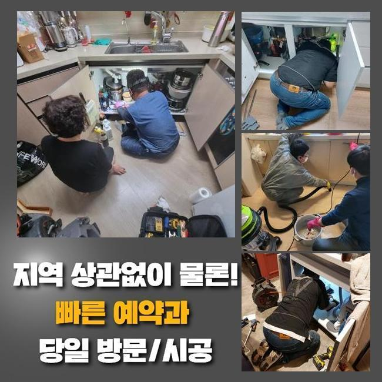
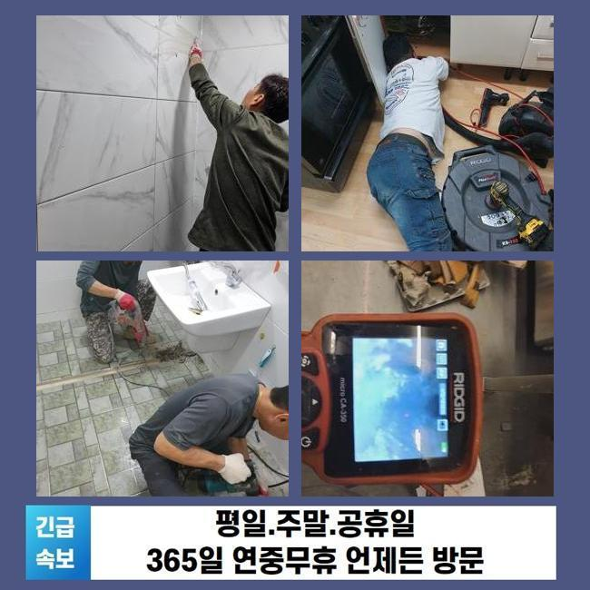
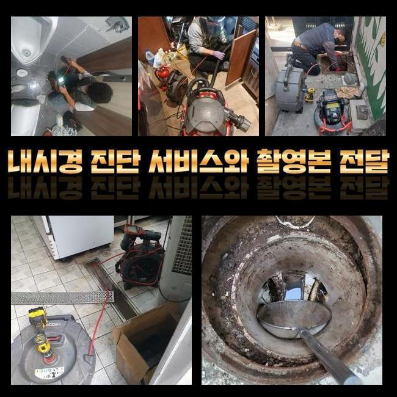
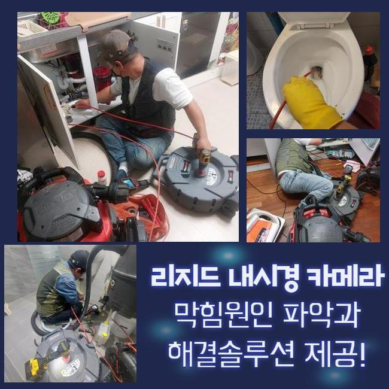
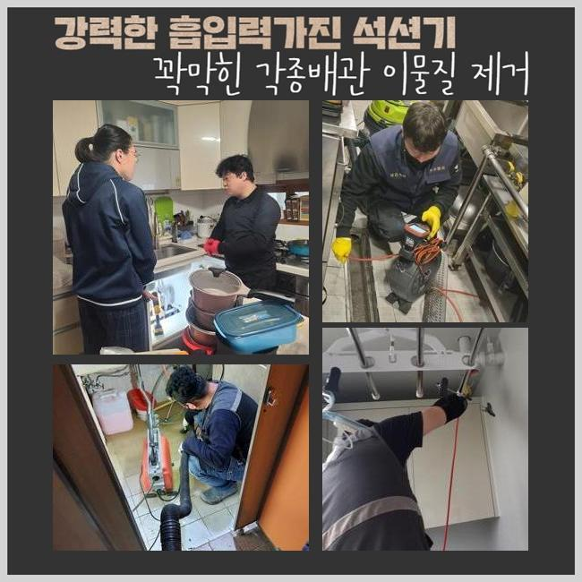
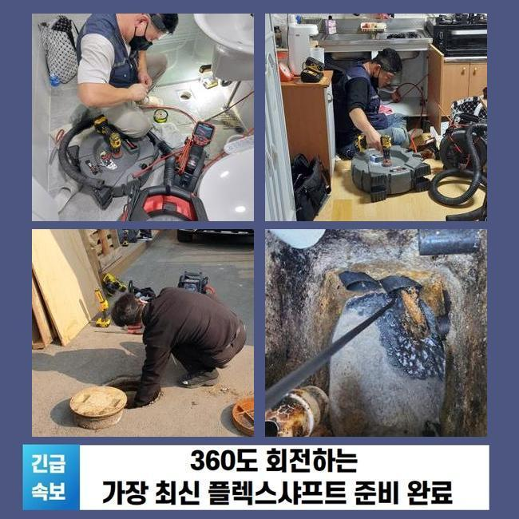

🏠 이천 단월동세탁실막힘 설성면 고압세척비용 설비공사
용인 싱크대막힘 전문 시공 후기

📋 작업 개요
- 위치: 용인
- 서비스 유형: 싱크대막힘, 하수구막힘, 배관막힘, 역류해결, 뚫는업체, 배관청소, 고압세척, 설비공사, 악취차단
- 작업 일시: 2025. 4. 3. 23:36
- 업체명: 하수구수사대 (010-5615-2118)
🔍 문제 상황
이천 단월동세탁실막힘 설성면 고압세척비용 설비공사
쉼의 공간이 되어야할 주거지에서 간헐적으로 생겨나는 트러블이 있답니다
그것들 중 배관막힘을 설명드리고자 해요
하수관이 차단되면 주변환경이 더러워질수 있고 평상적인 생활의 괴로움을 증가시키죠
배수불가 사태로 인해 욕실사용도 어려워지고 역류증세까지 보인다면 더욱더 사태는 악화일로로 가게되겠죠
금번에는 쓰리룸빌라에서 생긴 세탁실배수 고장으로 여러 기기를 동원해 처리한 부분을 설명드릴게요
의뢰인께선 주방시설 근처에 설비된 통돌이세탁기기에서 배관고장이 생겼다면서 저희들에게 의뢰를 진행하셨는데요
차량안에 샤프트기기와 석션기기와 같은 것들을 싣고 현장쪽으로 가게 되었습니다
당도하니 퀴퀴한 내가 진동을 하였고 이물질이 토출되어 있는 정황까지 목견할수 있었어요
세탁기능을 활용하여 배수를 시켜보려고 노력했지만 외려 넘치는 정황이 발생했다고 하시네요
단순히 세제성분만 역류되는게 아니었으며 다양한 이물들까지 올라오는 모습이었어요
특정 건물에선 베란다와 싱크대의 하수관이 교차되는 상황도 볼수 있답니다
그것 또한 점검해보기로 했죠
정황을 면밀하게 알아보려 의뢰인분에게 주방시설이나 타 배관이 막혔거나 역류증세가 생긴적은 없었는지에 대해 여쭸는데요

🔎 원인 분석
💡 전문가 진단: 정밀 진단 장비를 사용하여 슬러지의 고착 여부를 판명하고 타격/세척 작업을 실시했습니다.
그저께 물빠짐이 안되어서 슈퍼마켓에서 구매했던 베이킹소다와 식초를 넣어보셨다고 합니다
이에 따라 싱크공간과 관계된 하수도에 고장의 사유가 있을거라 추정했답니다
저희팀이 방문드린 장소의 트러블을 정리하려고 증상을 살피기로 했죠
내시경cctv를 투입시켜 정체가 생긴 배수관을 진단하기로 한건데요
안쪽이 혼잡할땐 방수성능이 있는 고속청소기로 배관의 침전물을 제거하게 되죠
해당 공정으로 공사시간을 축소시킬수 있는거죠
세척중에 여러 오물들과 찌꺼기들이 흡입되었는데요
그렇지만 이것만 가지고서는 근원적인 막힘동기가 어떠한 것인지에 대해 간파해내지는 못했답니다
일차로 진행한 셕션기기로 처치못하는 것들이 많았기 때문에 곧바로 내시경카메라를 집어넣어서 관로의 상황을 조사하기로 결정합니다
찌꺼기들을 신밀하게 파악해보니 해안에 많이 보이는 모래알갱이들이었어요
빨래를 하는 과정에서 배출된 정황일 가망성이 높았죠
손님께 휴가를 다녀오셨나 물었더니 뻘이 많은 해변가에 놀러가셨다고 알려주셨어요
우선하여 눈에띄는 잔재들을 처치하고 좀더 실질적으로 세척작업을 속행하기로 했죠
그리고나서 하수도 곳곳을 정리할수 있는 기계들을 접목해보기로 했답니다

🔧 작업 과정
내시경cctv를 쓰는건 막힘의 사유를 명확히 간파하고 물막힘을 해소하기 위해서죠
흡입기계로 세정을 끝마치고 가는 호스줄에 결속된 내시경을 사용하여 배수관 내측을 관찰하게 되었죠
깊은 지점까지 확인했고 실질적으로 문제가 되었던 것을 찾아낼수가 있었어요
이렇듯 물막힘과 역류는 여러종류의 변수들에 의해서 나타나게 되며 해결책이 간단한것도 아니랍니다
그렇기때문에 전문적인 테크닉과 장비를 토대로 시공을 해나가야 원만하게 끝마칠수 있는거죠
만일에 대충대충 사태를 정리하려든다면 더욱더 막힘이 증가할수 있단 것을 염두에 두시길 바라요
배수관 군데군데를 내시경카메라로 확인해보고 있어요
배수관의 사이즈는 예상한것 보다 크고 형태도 복잡해서 바로 이해하기에는 한계점이 있답니다
그럴때 작은 내시경cctv가 커다란 구실을 해낼수 있어요
배관내시경을 이용해서 관로안을 면밀하게 확인하였더니 다양한 노폐물들과 모래성분들이 혼재되어 있었어요
이러한 고형물들은 수용성이 아니라 배관면에 달라붙어 경화될수가 있어요
미세한 잔재들은 배수관을 통해 쉬이 바깥으로 배출되겠으나 일거에 그것들을 배관에 투입한다면 이 지점처럼 정체가 일어날수 있죠
또한 그런 정황이 지속된다면 관로에 이물막이 생성되기도 하죠
슬러지의 성격에따라 이용하는 도구가 다릅니다
하나의 예로 수건등의 커다란 부피의 물체가 막혀있다면 고리를 이용하여 꺼낸다음에 흡입기계로 하수구 하단부를 청소해야 됩니다
혹시라도 이러한 과정을 생략하고 곧바로 분쇄공정에 들어가면 하수관 내측이 한층더 혼잡해질수가 있는거죠
노폐물들이 특정 부위에 다량이 존재하고 있다면 인위적으로 파쇄하는 업무를 시행하곤 하죠
해당 세대는 흙더미들과 함께 혼합되어 있어서 그것들을 샤프트로 제거하고 뚫음을 시행하였죠
이곳에서는 전체 이물들을 소제하고 내시경설비로 또다시 진단을 하였어요
그후 잔류하는건 분쇄장비로 깨끗이 소제하고 즉각적으로 물을 내려 보았는데요
이상없이 속시원히 흘러내려가는걸 인지할수 있었네요
작업중에 발생한 잔재들을 전부다 정리하여서 치우는것으로 시공을 마무리하였죠


✅ 작업 완료
이러한 막힘증세를 차단하려면 정기적으로 하수구 점검했고 세척을 해야합니다
주방과 연결된 관로에서는 기름찌꺼기들이 막힘을 유발하고 역류까지 일으키는 경우가 허다하죠
해당 상황에 직면하면 방치하지말고 곧바로 배관업체에 연락하시는게 합당합니다
보통사람들이 처치할수있는 구간은 제한이 뒤따르고 트러블이 더욱더 안좋게되는 경우도 자주 볼수 있어요
전문가의 세척공정은 간단하게 삶을 정상화시키는걸 넘어서서 위생적인 안전성을 보존하는데도 중요하답니다
거기에 더해 막힘상황이 계속 방치되면 인접세대에도 곤란한 상황을 야기할수 있다는것을 기억해두시길 당부드려요




⚠️ 주방 싱크대 배관 막힘 예방 수칙
- ✅ 기름기가 묻은 식기나 프라이팬은 설거지 전 키친타올로 반드시 기름때를 닦아내세요.
- ✅ 주기적으로 싱크대 개수대에 뜨거운 물을 가득 받아 한 번에 내려 배관 내부 기름을 씻어내세요.
- ✅ 배수구 거름망을 미세한 필터로 사용하시고 음식물 찌꺼기가 틈으로 새어 들지 않게 관리하세요.
- ✅ 베이킹소다와 식초를 뜨거운 물과 함께 일주일에 한 번씩 부어주면 배관 살균과 막힘 예방에 좋습니다.
💡 핵심 정리
- 확실한 장비 작업(내시경 점검 및 샤프트 스케일링)으로 원인을 뿌리 뽑습니다.
- 작업 후 1년 이내에 동일한 부위 재발 시 100% 무상 A/S 서비스를 보장합니다.
- 서울 · 경기 · 인천 전 지역에 24시간 언제든 긴급 출동할 수 있도록 항시 대기 중입니다.
❓ 자주 묻는 질문 (FAQ)
🚨 용인 싱크대막힘 문제로 고민이신가요?
정확한 원인 진단과 확실한 시공으로 재발 없는 해결을 약속드립니다.
24시간 긴급 출동 | 서울 · 경기 · 인천 전지역 | 1년 내 재발 시 무상 A/S